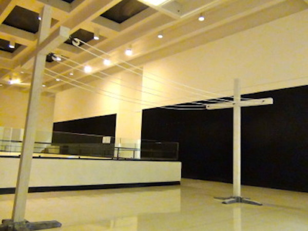

"Small" Things

Ketchup/Ketchdown (2018)
Ketchup packets mounted on wood.

Night Rocker(2013)
Interactive wood sculpture
26"x 23"x 17 ½"
Spare Table(2013)
Found leaves, Found wood
31"x 33"x 22"
Screw The Money(2013)
Wood, $10 in coins, Screws
34"x 27" x 9" (drawer is 1 ¾" deep)
The drawer has coins on the bottom, but isn’t deep enough to get a
hand around the money. Drywall screws are scattered throughout the coins.


Keeping Up with the Joneses(2012)
wood, clothesline, pulleys
Crosses: 7'x 4’ x 4" : spaced 11’ across


Hold‘Um/Fold'um (2011)
Plaster cast of my arms, arms casted using alginate
Brand(2010)
¼" Steel round-stock, Gold-Leaf, Racket grip-tape
19"x 6 ¼"
"Less-Small" Things

Jerk/Tug (2013)
Wood
34"x 99"x 24"
Interactive wood sculpture- The dresser was created to be too wide to open in
motion by yourself. The knobs are too far apart, and the drawers can only be cleanly opened when a person is pulling each side.